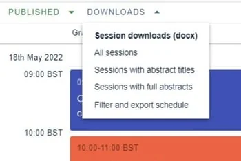
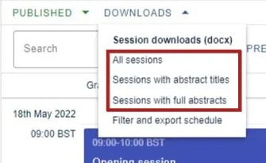
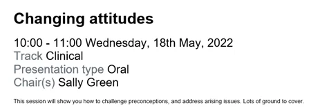
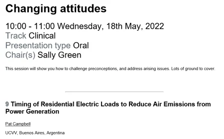
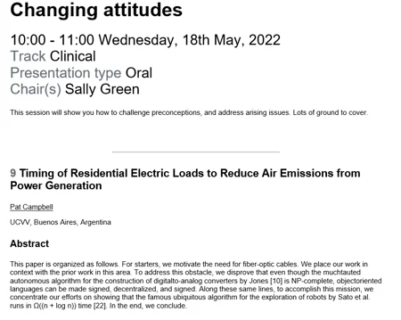
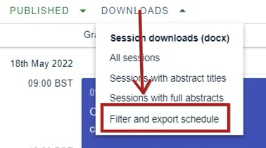
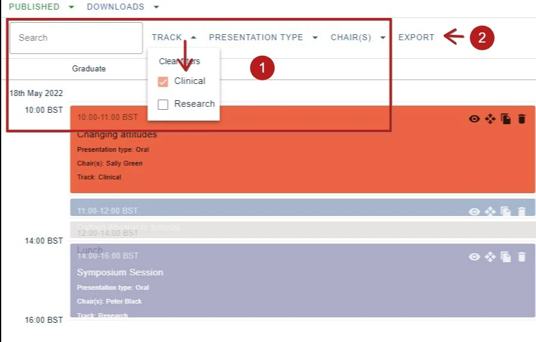
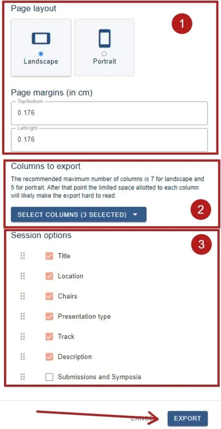
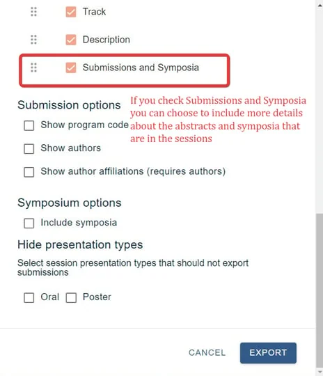

Downloading your program and session books
You can download a range of reports from your program builder dashboard, if you require.#
The guidance below is for event administrators/ organisers. If you are an end user (eg. submitter, reviewer, delegate etc), please click here.
Go toEvent dashboard → Conference → Program → Builder
Skip to Downloading your program
Click on Downloads in the top right of your dashboard, and make your selection.

Session books
There are three versions to suit your requirements:

All sessions: A list of all sessions with no abstract information, exported as a Word doc

Sessions with abstract titles:A list of all sessions with abstract titles, exported as a Word doc

Sessions with full abstracts: A list of all sessions with full abstracts, exported as a Word doc.

Downloading your program
Choose Filter and export schedule

You can download the entire program or, if you require, you can 1) search and / or filter your sessions.
2) Click Export


You can then configure your export download and:
1) Choose the page layout and margins.
2) Choose which columns you would like to export by clicking the down arrow.
3) Choose which of the session detail options you would like to appear in the download.
Then click Export when you are ready.

You can also include details of the contents of the sessions, see below for details.

Did this page solve it?
Thanks — this helps us fix it.
Didn't solve it? Ask our support team
No question is too small, and there's no charge for asking. Raise a ticket and someone who knows the software will pick it up.